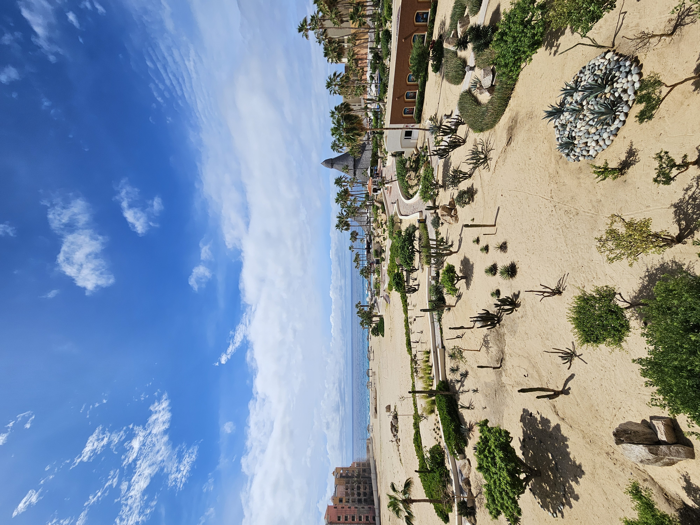
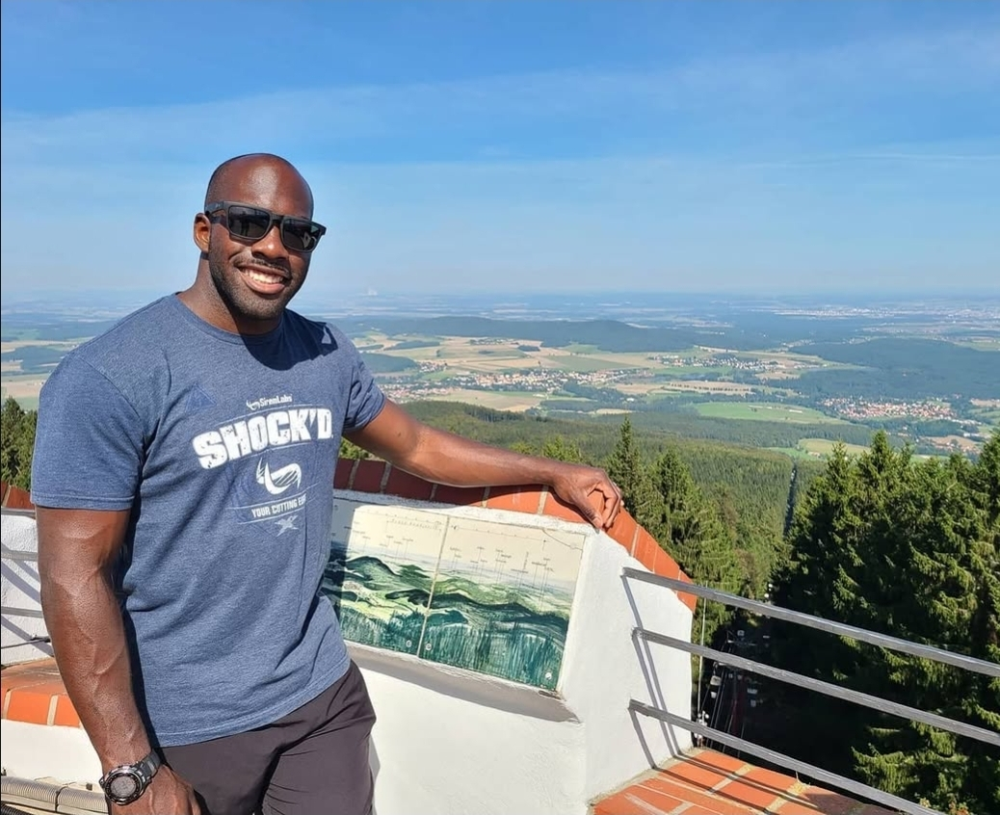
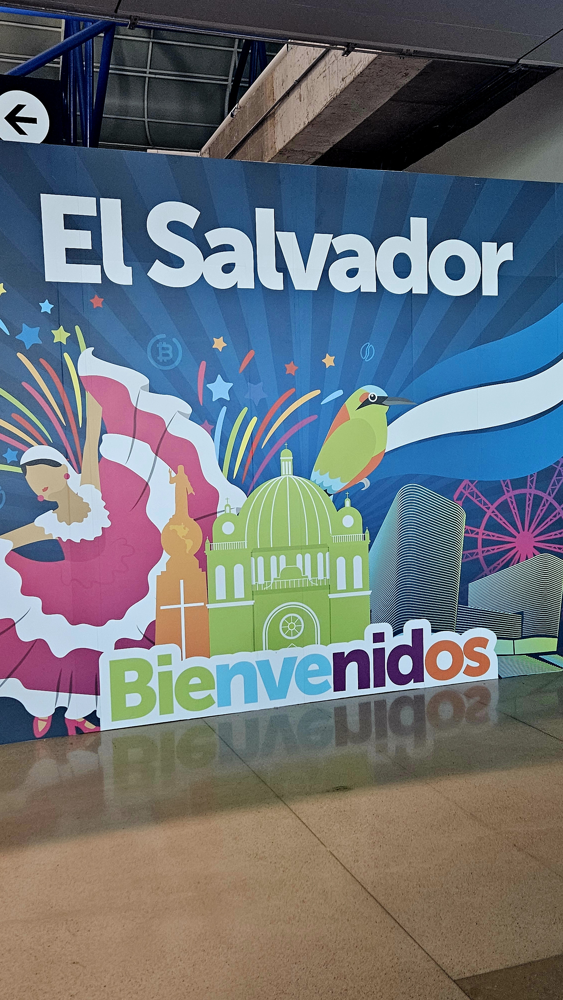
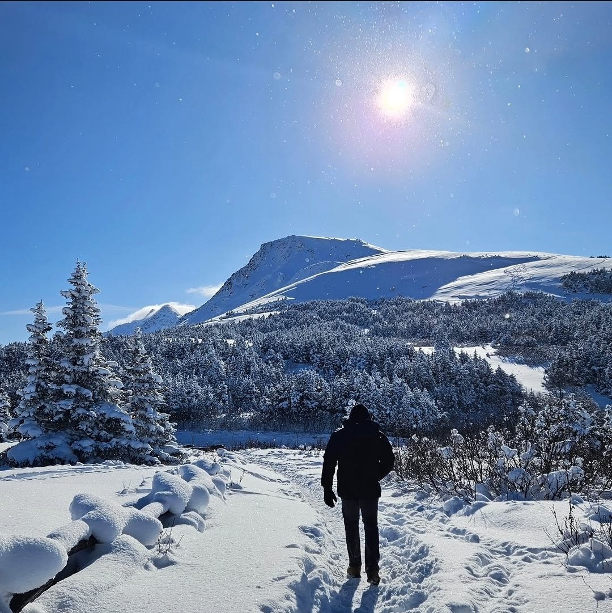
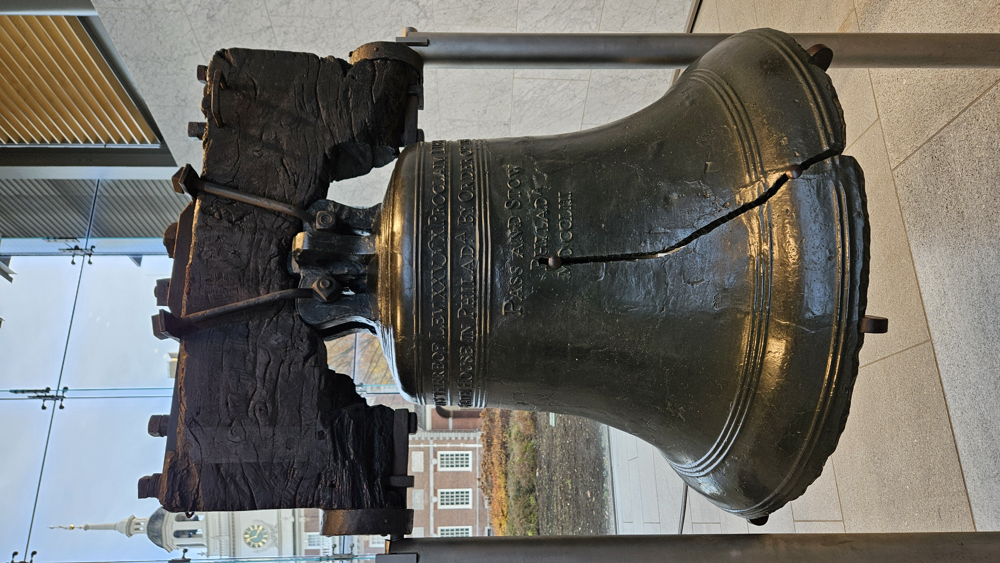

My Collection
This is my curated collection of places I've traveled. Each location here represents something meaningful to me, whether it's a favorite destination, surreal moments caught on camera, or memorable adventures. This collection showcases how responsive design allows me to adapt my content across all screen sizes.
Close Air Support
Desert Training
breathtaking A-10 Warthog flyby out in the desert. Nothing quite matches the roar of this aircraft coming in low! My job in the Air Force was to provide close air support to ground troops, and this aircraft was a key part of that mission. I was fortunate to witness this flyby during a training exercise, and it left a lasting impression on me.

Cabo San Lucas, MX
Destination Wedding
Beautiful views, sandy beaches, and perfect weather. Celebrating a wedding down in Cabo was an unforgettable experience. We were there attending a friend's wedding from San Antonio, and it was a great opportunity to explore the area. The beaches were pristine, the food was amazing, and the overall atmosphere was just perfect for a wedding celebration. I would love to return to Cabo someday to relive those memories and explore more of what this beautiful destination has to offer.

Czech Republic
High Vantage Point
Taking in the incredible views from high up in the Czech Republic. I was fortunate to visit this beautiful country during my time in the Air Force, and the scenery was absolutely breathtaking. The architecture, landscapes, and culture all left a lasting impression on me.

San Salvador
Capital City
Touching down in El Salvador! The colorful 'Bienvenidos' sign at the airport was the perfect start to exploring the country. My wife's family is orginally from El Salvador, and it was a special experience to visit and connect with her roots. The culture, food, and people were all incredibly welcoming, and I look forward to returning in the future.

Flattop Mountain
Mountain Hiking
Trekking through the deep snow towards Flattop Mountain. The crisp air and bright sun made for a perfect, peaceful hike. Alaska is an amazing place to explore, and this hike was a great way to experience the natural beauty of the area. The views from the top were absolutely worth the effort, and I can't wait to go back for more adventures in the mountains.

Philadelphia
Historic Landmark
Getting to see a piece of American history up close. The famous crack in the Liberty Bell is iconic to see in person. We were actually in Philly for a Eagles football game, and made extra time to get out and explore the city. The Liberty Bell was a highlight of our trip, and it was fascinating to learn about its history and significance. The surrounding area is also rich with historical landmarks, making it a great destination for history buffs like myself.